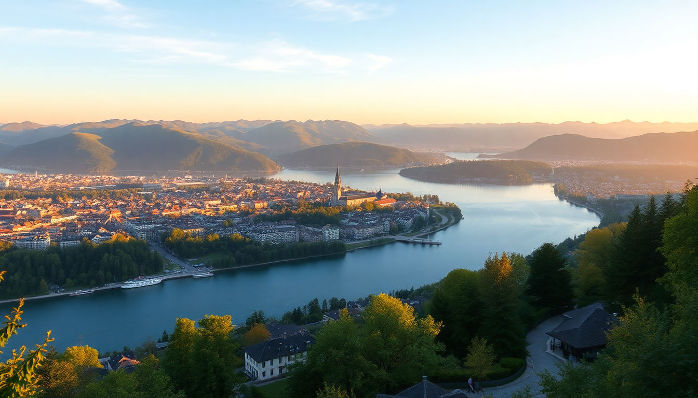

Best Day Trips from Zurich: Lucerne, Rhine Falls & Bern

I spent a week based in Zurich and used it as a launchpad for three day trips that actually felt worth the train fare. Lucerne, Rhine Falls, and Bern each offer something different — but not all of them deliver the same value for a single day. Here’s what I learned about timing, transport, and which spots to skip when you’re short on time.
How easy is it to get from Zurich to Lucerne by train?
Very easy. The direct train from Zurich Hauptbahnhof to Lucerne takes about 45 minutes and runs at least twice an hour. I took the 8:17 IR train and was at Lucerne station before 9:00. No reservations needed — just buy a ticket at the machine or use the SBB app. A same-day return costs around CHF 50, but if you’re doing multiple day trips, the Swiss Travel Pass or a half-fare card pays for itself fast.
Once you arrive, the station sits right on the lake. Walk out the main exit and you’re staring at the Chapel Bridge and the Water Tower. That’s your starting point.
What should I actually do in Lucerne for a day?
Skip the Lion Monument if you’re on a tight schedule — it’s a 10-minute walk from the bridge and it’s just a carved rock in a quiet park. Nice, but not worth the detour if you only have six hours.
Instead, focus on the old town on the north side of the Reuss River. We spent the morning walking the Weinmarkt square and the cobbled lanes around Kapellgasse. Grab a coffee at Café de Ville on the square — decent espresso and you can watch the morning market set up.
For lunch, Brasserie Bodu on the riverfront does solid Swiss-German food without the tourist markup. I had the Zürcher Geschnetzeltes with rösti, and it was the best meal of the trip.
After lunch, take the Vierwaldstättersee ferry — it’s part of the public transport system, so your train ticket might cover it. A 30-minute ride across the lake gives you postcard views of the mountains without committing to a full boat tour.
Key stops in Lucerne:
- Chapel Bridge and Water Tower — the main photo spot, but crowded by 10:00
- Weinmarkt — quiet in the morning, lively by noon
- Musegg Wall — climb one of the towers for a free view over the city
- Brasserie Bodu — reliable lunch spot on the river
- Löwendenkmal — only if you have extra time
Is a day trip to Rhine Falls worth the detour?
Yes, but only if you’re combining it with something else. Rhine Falls is Europe’s largest waterfall by volume, but it’s a single attraction. You can see the whole thing in 90 minutes. I paired it with a stop in the town of Schaffhausen on the way back, and that made the trip feel complete.
From Zurich, take the S-Bahn to Schloss Laufen am Rheinfall station — it’s about an hour. The platform leads directly to the entrance of the falls viewpoint. Entry to the viewing platforms costs CHF 5. The highlight is the Felsenkanzel — a rock platform that juts out over the middle of the falls. You will get wet. Wear a rain jacket.
The boat ride to the central rock is fun but not essential. It costs CHF 10 and takes 15 minutes. If you’re pressed for time, skip it.
After the falls, hop back on the train for 10 minutes to Schaffhausen. The old town has a preserved medieval core with painted facades and a pedestrian-only main street. We had a late lunch at Restaurant Schützenstube — simple, local, no English menu. I ordered the Kalbsleber (veal liver) and it was excellent.
Rhine Falls logistics:
- Train to Schloss Laufen am Rheinfall — direct from Zurich, hourly
- Entry fee — CHF 5 for viewing platforms
- Boat to the rock — CHF 10, skipable
- Schaffhausen old town — 10 minutes by train, worth the extra stop
- Restaurant Schützenstube — local food, no tourist menu
How does Bern compare as a day trip from Zurich?
Bern is a longer ride — about 1 hour 15 minutes direct from Zurich — but the old town is a UNESCO World Heritage site and it feels more lived-in than Lucerne. It’s less touristy, which I appreciated.
The train drops you at Bern Hauptbahnhof. Walk straight out the main entrance and you’re on Bundesgasse, which leads to the Zytglogge clock tower in five minutes. The astronomical clock is the real deal — built in 1530. The mechanical show happens four minutes before every hour. It’s not dramatic, but it’s old and weird and worth stopping for.
The Rosengarten is a 15-minute uphill walk from the old town. It’s a rose garden with a panoramic view over Bern’s red-roofed skyline and the Aare River. Free entry. Go in the late afternoon when the light hits the cathedral.
For lunch, Lorenzini on Münstergasse does good pasta in a quiet courtyard. Not Swiss, but the best food I found in Bern. The Münster (cathedral) is worth the 344-step tower climb — CHF 5 and a killer view at the top.
Key spots in Bern:
- Zytglogge — medieval clock tower, free to watch
- Münster — cathedral with a climbable tower, CHF 5
- Rosengarten — free viewpoint over the city
- Lorenzini — reliable lunch spot, courtyard seating
- Aare River — locals swim in it in summer; you can just watch
What’s the best way to get around between these places?
Trains. Switzerland’s rail system is absurdly punctual. I used the SBB app for all tickets and schedules. For a single day trip, buy a point-to-point ticket. For two or more trips in a week, the Swiss Travel Pass (CHF 232 for 3 days) covers trains, boats, and most city transport.
If you’re staying in Zurich, the Zurich Card (CHF 27 for 24 hours) covers city trams and gives 50% off some day trips — but it doesn’t cover the full train fare to Lucerne or Bern. I found it only useful for the first day in Zurich itself.
Transport tips:
- SBB app — buy tickets, check platforms, track delays
- Swiss Travel Pass — worth it for 3+ days of travel
- Half-fare card — CHF 120 for a month, halves all train tickets
- Zurich Card — only worth it for Zurich city transport
FAQ
How much time do I need for each day trip? Lucerne needs a full day — leave by 8:00, return by 18:00. Rhine Falls can be done in half a day if you leave by 10:00 and add Schaffhausen. Bern works best as a full day, but you can cut it to 5 hours if you skip the Rosengarten and the cathedral climb.
Can I do two day trips in one day from Zurich? Technically yes, but I wouldn’t. Rhine Falls and Schaffhausen together take about 4 hours, so you could theoretically add a morning in Lucerne. But you’ll spend more time on trains than seeing anything. Pick one and do it well.
Is it worth buying the Swiss Travel Pass for just one day trip? No. A single return ticket to Lucerne costs about CHF 50. The Swiss Travel Pass costs CHF 232 for 3 days. If you’re only doing one day trip, just buy the point-to-point ticket. If you’re doing three or more, buy the pass.
Conclusion
- Lucerne is the most scenic day trip from Zurich — 45 minutes by train, walkable old town, lake ferry included. Skip the Lion Monument, eat at Brasserie Bodu.
- Rhine Falls is a quick stop — pair it with Schaffhausen to make a half-day. Wear a rain jacket for the viewing platform.
- Bern is the least touristy option — longer train ride, but the Zytglogge and Rosengarten make it worth it. Lunch at Lorenzini.
- Trains are the only way to go — use the SBB app, skip the Zurich Card for day trips, buy a half-fare card if you’re doing more than two trips.
- Don’t try to do two in one day — you’ll rush and miss the parts that make each place worth visiting.